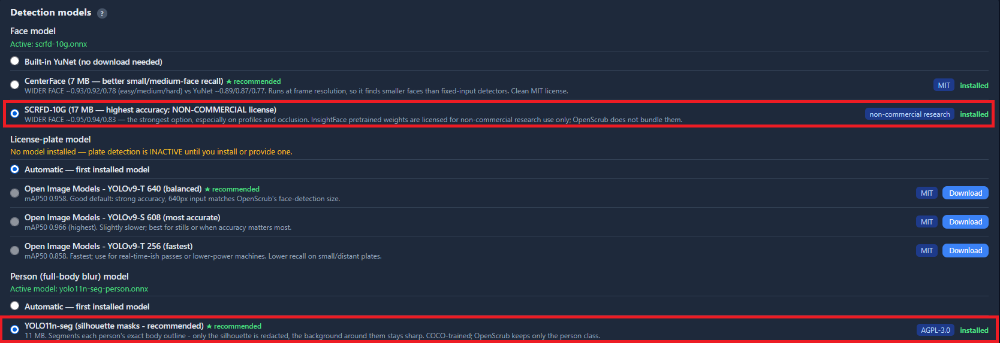
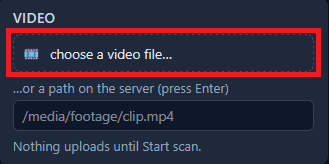
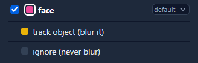
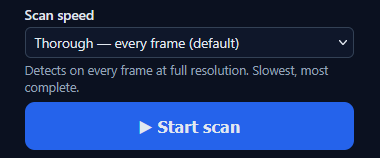
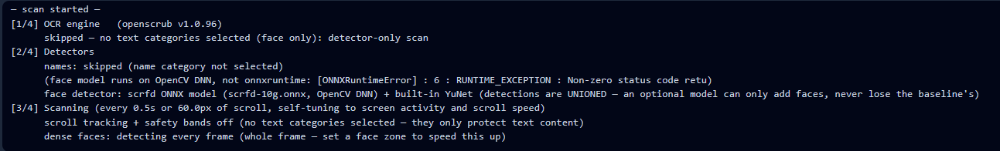

1. Инсталирате програмата OpenScrub-Setup.exe - линк в Github за сваляне на програмата от сайта на разработчика благодарности на https://github.com/austinmabry! - сваляне на допълнителни добавки за програмата за отстраняване на проблем със стартиране от акаунт в Windows с кирилица. 2. Разархивирате архива "OpenScrub.zip" и копирате папката OpenScrub в главната директория на локален диск C:\ 3. Стартирате програмата от скрипта: C:\OpenScrub\Start_with_C_OpenScrub.bat - или копирате прекия път на десктопа - OpenScrub Web.lnk (част от архива OpenScrub.zip) 4. Инсталирате програмата (свалена от линка на разработчика или от OpenScrub.zip -> OpenScrub-Setup.exe) 5. Отваряте в браузър следния линк: https://localhost:8384/ 6. Влизате в настройките и активирате следните engines: - Detection models слагате отметки на: - Face Model -> [v] SCRFD-10G [donwload] - Person (full-body blur) model -> [v] YOLO11n-seg [download]
7. Избирате файл от компютъра, който да обработите - choise a video file...
8. [v] face [default] - ако някое от лицата трябва да остане незамъглено се слага отметка и на ignore (never blur)
9. Start scan -> Изчаква се да се обработи видеото (за 1-минутен клип отнема около 10-15 минути) - за по-бърза обработка (ако е необходимо), може да се избере Scan speed: Balanced - 2x faster

10. Преглед на кадрите, които ще бъдат замъглени, които са със статус Blur ще се замъглят 11. Save edits & render -> Download redacted video Съдържание на скрипта: @echo off chcp 65001 > nul set LOCALAPPDATA=C:\OpenScrub set USERPROFILE=C:\OpenScrub start "" "C:\Program Files\OpenScrub\openscrub-web.exe" *Използването на скрипта не е необходимо, ако името на акаунта ви в Windows не е на кирилица.